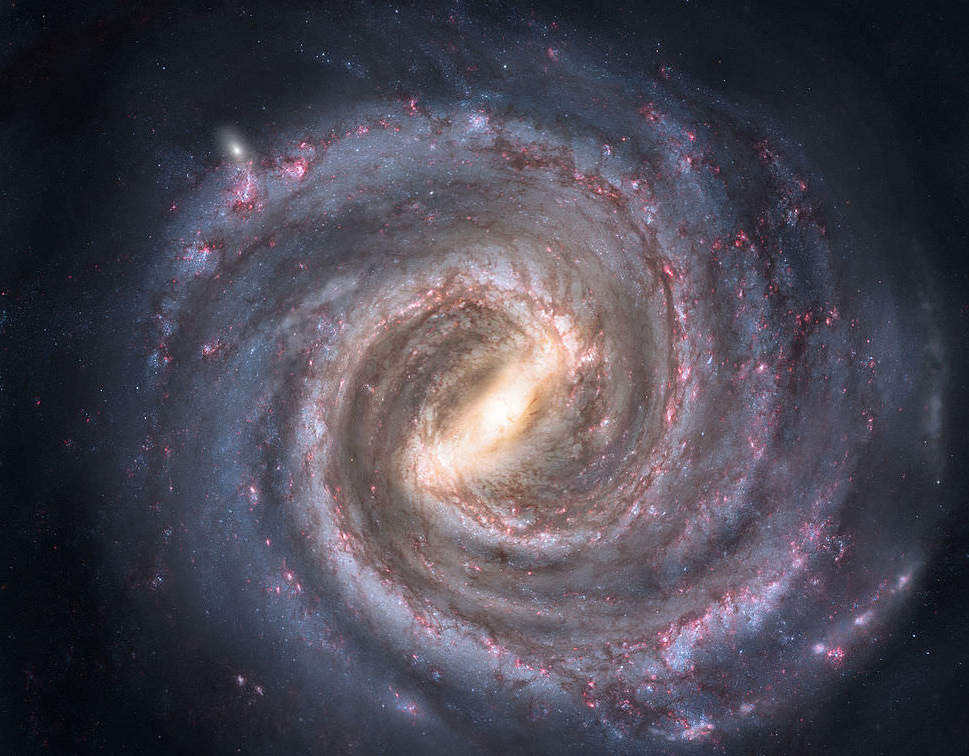

ASTROWORLD

The Milky Way is the galaxy that includes our Solar System, with the name describing the galaxy's appearance from Earth: a hazy band of light seen in the night sky formed from stars that cannot be individually distinguished by the naked eye.
The ozone layer or ozone shield is a region of Earth's stratosphere that absorbs most of the Sun's ultraviolet radiation. It contains a high concentration of ozone in relation to other parts of the atmosphere, although still small in relation to other gases in the stratosphere.